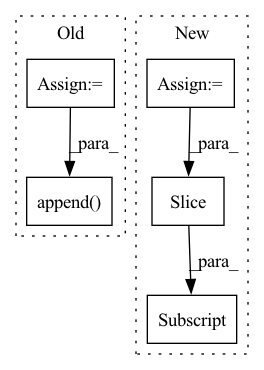

Pattern ID :29252

Before Change
neg_roi_per_this_image = self.n_sample - pos_roi_per_this_image
neg_roi_per_this_image = int(min(neg_roi_per_this_image, neg_index.size))
if neg_index.size > 0:
neg_index = np.random.choice(neg_index, size=neg_roi_per_this_image, replace=False)
// 将正负样本的roi索引合并到一起
keep_index = np.append(pos_index, neg_index)
// 从所有roi中挑选出正负样本的label
gt_roi_label = gt_roi_label[keep_index]
// 将负样本的label置为0
gt_roi_label[pos_roi_per_this_image:] = 0
After Change
// 获取那些IOU大于pos_iou_thresh的roi索引
// pos_index = np.where(max_iou >= self.pos_iou_thresh)[0]
pos_index = torch.nonzero(max_iou >= self.pos_iou_thresh)
pos_num = pos_index.numel()
pos_roi_per_this_image = int(min(pos_roi_per_image, pos_num))
if pos_num > 0: // 兼容 0-d tensor
// pos_index = np.random.choice(pos_index, size=pos_roi_per_this_image, replace=False)
pos_index = pos_index[torch.randperm(pos_num)[:pos_roi_per_this_image]]
// 获取那些IOU在[neg_iou_thresh_lo, neg_iou_thresh_hi)区间的roi索引
// 其实这里感觉分配的不是很合理,因为IOU=0.49与0.51在数值上区别很小.人眼更是几乎看不出来(除非写轮眼) TODO 待实验 hi↑ lo↓
// neg_index = np.where((max_iou < self.neg_iou_thresh_hi) & (max_iou >= self.neg_iou_thresh_lo))[0]
neg_index = torch.nonzero((max_iou < self.neg_iou_thresh_hi) & (max_iou >= self.neg_iou_thresh_lo))
neg_num = neg_index.numel()
// 计算每张图片中理论上的负样本个数
neg_roi_per_this_image = self.n_sample - pos_roi_per_this_image
neg_roi_per_this_image = int(min(neg_roi_per_this_image, neg_num))
if neg_num > 0:
// neg_index = np.random.choice(neg_index, size=neg_roi_per_this_image, replace=False)
neg_index = neg_index[torch.randperm(neg_num)[:neg_roi_per_this_image]]
// 将正负样本的roi索引合并到一起
keep_index = torch.cat((pos_index, neg_index)).squeeze()
// 从所有roi中挑选出正负样本的label
In pattern: SUPERPATTERN
Frequency: 3
Non-data size: 5
Instances
Fragment ID: 85978462
Project Name: pangkun248/faster-rcnn-pytorch
Commit Name: 811d49713cf13070465c16e51d96db0077647739
Time: 2021-08-26
Author: 39581901+pangkun248@users.noreply.github.com
File Name: utils/creator_tool.py
M Class Name: ProposalTargetCreator
N Class Name: ProposalTargetCreator
M Method Name: __call__(4)
N Method Name: __call__(6)
M Parent Class: object
N Parent Class: object
M File Name: utils/creator_tool.py
N File Name: utils/creator_tool.py
M Start Line: 176
M End Line: 224
N Start Line: 231
N End Line: 281
'>
Before Change
token_length = len(y["text"].split(" "))
if y["ner"] == "DATE":
dates.append(y["text"])
index = len(all_text[:y["characterOffsetEnd"]].split(" "))
if token_length < 2:
indices.append([index - 1])
else:
indices.append(list(range(index - token_length, index)))
index += token_length
After Change
text = match[0]
token_length = len(text.split(" "))
idx = all_text.find(match[0])
text_len = len(text)
index = len(all_text[:idx].strip().split(" "))
replaced_text = " ".join(["*"*len(i) for i in text.split(" ")])
'>
Fragment ID: 85978457
Project Name: praneet9/representation-learning-for-information-extraction
Commit Name: e369e0fb493febe1b1a3ad69bcef2218109d1134
Time: 2021-02-21
Author: praneetbomma@gmail.com
File Name: utils/extract_candidates.py
M Class Name: AnonimousClass
N Class Name: AnonimousClass
M Method Name: get_dates(2)
N Method Name: get_dates(2)
M Parent Class:
N Parent Class:
M File Name: utils/extract_candidates.py
N File Name: utils/extract_candidates.py
M Start Line: 28
M End Line: 45
N Start Line: 29
N End Line: 46
'>
Before Change
feat = self.bn(feat, training=training)
feat = self.relu(feat)
feat = self.linear(feat)
feat = self.out(feat, rev)
output.append(feat)
return output
def preprocess(self, data, attr):
points = np.array(data["point"], dtype=np.float32)
After Change
pos_list = []
feat_list = []
index_map_list = []
start_idx = 0
for length in inputs["batch_lengths"]:
pos = inputs["point"][start_idx:start_idx + length]
feat = inputs["feat"][start_idx:start_idx + length]
feat, pos, index_map = self.input_layer(feat, pos)
pos_list.append(pos)
feat_list.append(feat)
'>
Fragment ID: 85978456
Project Name: isl-org/open3d-ml
Commit Name: 67123f7e9d5dbbe6a73c42ef648093a7d25ace4a
Time: 2021-05-11
Author: sanskaragrawal107@gmail.com
File Name: ml3d/tf/models/sparseconvnet.py
M Class Name: SparseConvUnet
N Class Name: SparseConvUnet
M Method Name: call(3)
N Method Name: call(3)
M Parent Class: BaseModel
N Parent Class: BaseModel
M File Name: ml3d/tf/models/sparseconvnet.py
N File Name: ml3d/tf/models/sparseconvnet.py
M Start Line: 45
M End Line: 58
N Start Line: 71
N End Line: 92